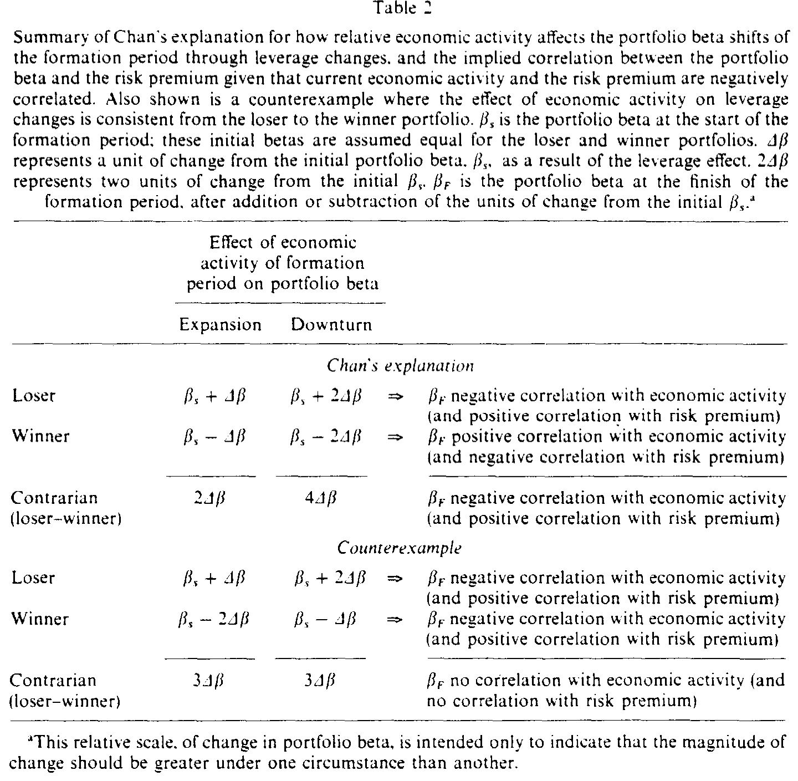
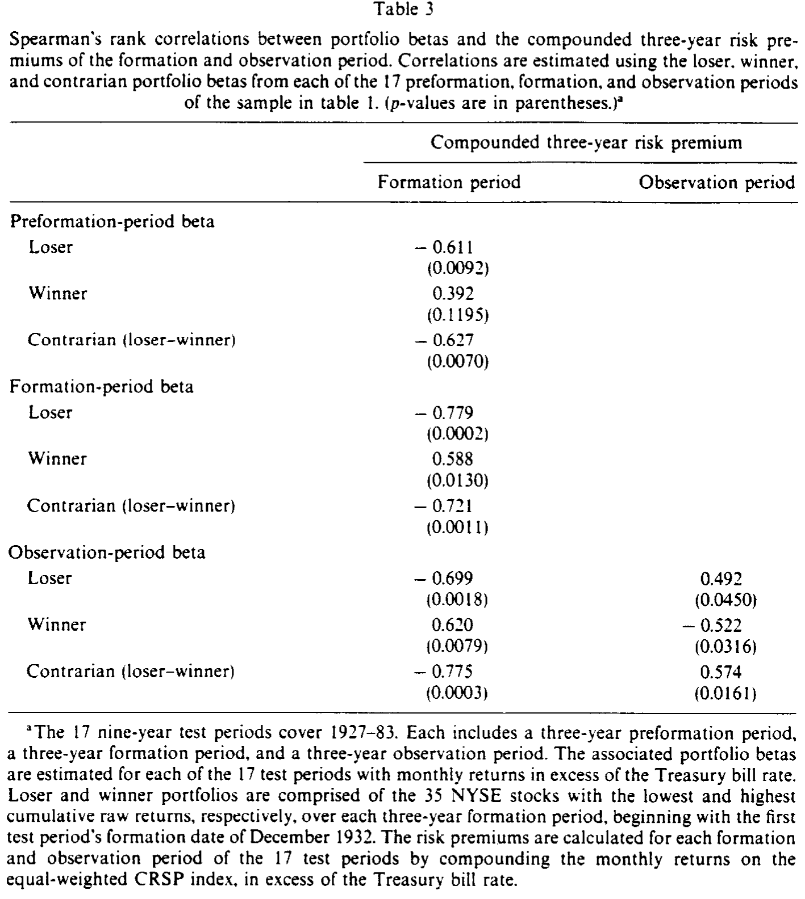
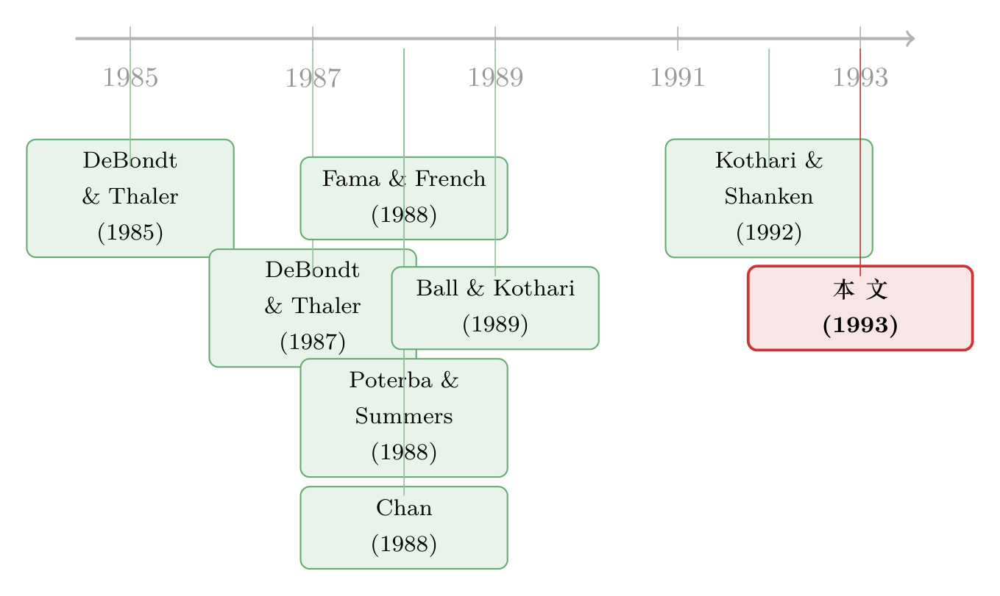

反转策略的钱，到底是「捡来的」还是「赚来的」？
本文读的是 Jones (1993, Journal of Financial Economics)：长期反转（contrarian）策略赚的那笔钱，到底是市场「过度反应」留下的免费午餐，还是对时变风险的正常补偿？作者证明，Chan (1988) 用来「解释掉」这笔钱的那个正协方差，并非来自杠杆，而是来自「组合构成对形成期收益的依赖 + 指数收益的负自相关」；更要命的是，这会让观察期的 beta 估计有偏——一旦底层因子发生反转，本该进入 alpha 的收益会被「塞进」beta 里。用 Kothari-Shanken (1992) 的条件 beta 把偏差挤掉之后，beta 的漂移不足以抹平反转收益。于是这场争论最终塌缩成 Fama-French 与 Poterba-Summers 之争：指数里那个「暂时的价格成分」，到底是理性的贴现率变动，还是噪声交易者的杰作。
1 一笔说不清来路的钱
先讲一个所有做量化的人都眼熟的故事。
你挑出过去三年里涨得最凶的 35 只「赢家」，把它们做空；再挑出跌得最惨的 35 只「输家」，把它们做多。这一多一空，构成一个净头寸——业内叫它反转策略 (contrarian strategy)。DeBondt 和 Thaler（下称 D&T）1985 年发现，这个组合在随后的三年里，平均能赚一大笔正收益：形成期结束后 36 个月，输家组合的累积异常收益 ACARL = 19.6%，赢家组合 ACARw = -5.0%，两者之差（也就是反转头寸）对应的 t = 2.20。
D&T 的解释干脆利落：市场过度反应 (overreaction) 了。赢家被捧上了天，输家被踩进了泥里，时间会把价格拉回来，于是你「逆向」操作就能赚钱。
听上去很美。但凡是赚钱的异象，资产定价的人都要先问一句煞风景的话：这笔钱，是市场犯傻留下的（mispricing），还是你承担了某种风险换来的（compensation）？
这就是这篇论文要钻进去的那条裂缝。
2 三家打架：过度反应、时变风险、还是杠杆？
围绕这笔钱，1980 年代末打成了一团。
第一家，D&T：过度反应。无需多言。
第二家，Chan (1988)：别急着喊过度反应。Chan 说，反转策略赚的是时变的期望收益——具体地，是反转组合的 CAPM beta 与风险溢价之间存在一个正协方差 (positive covariance)。直觉上，输家因为累积了巨亏，杠杆抬高、beta 变大；赢家因为累积了巨盈，杠杆下降、beta 变小。于是反转（输家减赢家）组合的 beta 在形成期被推高了。这就是所谓的杠杆效应 (leverage effect)，本质上是 Fama-French「贴现率效应」的组合版。
Chan 怎么把这套说法落到数据上的？他跑了一个带虚拟变量的时间序列回归，让 beta 和 alpha 都能在形成期和观察期之间「跳一下」：
这里 R_{ip}^* 是赢家或输家组合相对国库券利率的超额月收益，R_{mt}^* 是等权 CRSP 指数的超额月收益。把这个回归一跑，Chan 发现观察期的风险调整后 alpha 不再显著——D&T 的反转收益似乎被「解释掉」了。
第三家，Ball 和 Kothari (1989)：我们也相信杠杆诱导的 beta 漂移，但是——我们没有检测到那个关键的正协方差。
然后 D&T (1987) 回马一枪，给 Chan 来了个更难堪的反驳：他们发现反转组合的 beta 是不对称的——在上涨市（已实现风险溢价为正）里，反转 beta 是正的（β_cu = 0.395，显著大于零）；而在下跌市里，反转 beta 居然是负的（β_cd = -0.323，显著小于零）。D&T 说，beta 在牛熊里符号都能翻过来，这种东西根本不配拿来做风险调整。
四篇论文、三种立场，吵得不可开交。这篇 1993 年的论文（作者 Steven L. Jones，当时刚从 Purdue 博士毕业、任教于佐治亚大学）想做的，是一件很「裁判」的事：把这场争论和「长期指数收益的负自相关」这条线接起来，看看到底谁说对了。
3 第一刀：杠杆，撑不起那个正协方差
我们先复述一下 Chan 的逻辑核心：反转组合的 beta，要和风险溢价正相关。Chan 论证说，经济下行时，输家亏得更惨、市值缩水更多、beta 抬升更猛；而下行时期望风险溢价又高——一拉一抬，就有了正协方差。赢家那头，反方向地，beta 与风险溢价负相关。两边一减，反转组合的 beta 与风险溢价正相关。
作者的第一刀，正是切在这里。他把 Chan 的论证摊开成一张表（如表 2），逐格去对。

Table 2
问题出在赢家那一格。要让反转 beta 与经济活动负相关，Chan 必须假设赢家的 beta 在下行期下降得比上行期更多。可是杠杆效应说的恰恰相反：赢家在经济扩张期赚得更多、市值膨胀更大、杠杆下降更多，所以 beta 在扩张期应当降得更多才对。换句话说，Chan 对赢家 beta 变化的刻画，和杠杆效应本身是矛盾的。
作者顺手给了一个与杠杆效应自洽的反例（表 2 下半部分）：让赢家 beta 在扩张期降得更多，结果反转组合的 beta 就未必和经济活动、风险溢价相关了。至于 Chan 那句「输家赢家 beta 必须反向变动（因为全市场 beta 之和为 1）」的辩护，作者也不买账：这两个极端组合只占市场总市值的一丁点，这点扰动早就被市场的其余部分吸收掉了。
这一刀的意义不是「杠杆不存在」。杠杆效应确实会让反转组合的 beta 在形成期整体抬高。作者要说的是：杠杆能解释 beta 的「水平」上移，却解释不了 beta 与风险溢价之间那个要命的「协方差」。协方差的来源得另找。
4 真正的来源：beta 是「挑」出来的
那个正协方差到底从哪来？这是全文最漂亮的一步。
回到最朴素的市场模型：
$$R_{it} = ER_i + \beta_i\,[R_{mt} - ER_m] + e_{it}$$
只要市场收益没有大幅偏离预期，极端表现者主要是被误差项 e_it（公司特质冲击）挑出来的。但一旦市场大跌呢？ 此时累积原始收益最低的「最大输家」，会系统性地偏向那些形成期初 beta 高的股票——因为市场跌的时候，高 beta 股票天然跌得更狠。反过来，大涨的市场里，最大的赢家会偏向高 beta 股票，最大的输家偏向低 beta 股票。
于是关键来了：反转组合的初始 beta，是「条件于」形成期已实现风险溢价的（这一点 Kothari 和 Shanken 1992 也指出过）。把它和 Fama-French 的发现接上——市场下跌后期望风险溢价高、上涨后期望风险溢价低（也就是长期指数收益的负自相关）——就能推出：风险溢价与输家组合的初始 beta 正相关、与赢家组合的初始 beta 负相关。两边一减，反转 beta 与风险溢价的正协方差，凭空就出来了，根本不需要杠杆登场。
一句话：协方差不是杠杆「造」出来的，而是「组合构成对形成期收益的依赖」 ×「指数收益的负自相关」挑出来的。
数据对得上吗？表 1 样本里，形成期与观察期风险溢价的相关系数是 -0.35，几乎正好等于 Fama-French 报告的三年期收益自相关。作者进而算了组合 beta 与风险溢价的 Spearman 秩相关（如表 3）：反转组合的预形成期 beta 与形成期风险溢价的相关是 -0.627（p = 0.0070）——注意，这是在杠杆效应还没来得及发挥作用的「预形成期」就已经存在的条件性证据；形成期 beta 与形成期风险溢价相关 -0.721（p = 0.0011），只比预形成期略负一点，说明杠杆效应对这个协方差的贡献微乎其微。

Table 3
最妙的是符号翻转：观察期 beta 与形成期风险溢价相关 -0.775（p = 0.0003），却与观察期风险溢价相关 +0.574（p = 0.0161）。一负一正之间的那个翻转，正是被形成期—观察期之间 -0.35 的负自相关「拨」过来的。
到这一步，故事似乎可以收尾了：反转收益是风险的差异，只要指数的负自相关代表的是理性的时变期望收益。可是——
5 反转出现：beta 估计本身是「脏」的
但真正关键的一步，是作者紧接着提出的一个质疑：观察期的 beta 估计，可能本身就有偏。
设想底层的收益生成过程是多因子的。极端表现者之所以极端，是因为它们在形成期重仓压在了某个底层因子上。如果这个因子的实现值从形成期到观察期发生了反转（reversal），那么在 Chan 的回归 (eq. 1) 里，这部分由因子反转带来的收益，就会被beta 估计吸收掉，而不是落进 alpha 截距里——尤其当表现的来源是系统性而非公司特质的时候。
这就把 Chan 的方法逼到了墙角：它只能可靠地识别「非系统性」的过度反应。因为只要底层因子实现值发生反转——无论这反转是理性的还是非理性的——它都会以「beta 偏差」的形式显形，从而被误读成「风险补偿」。Ball 和 Kothari 之所以没检测到正协方差，作者认为也可能是这个偏差在作祟。
（关于「用负协方差去『证明』过度反应这件事有多滑」，可参见《负的协方差，凭什么就证明了「过度反应」？》；而「时变 beta 长期被低估」的另一面，见《时变的 beta，被低估了二十年的风险》。）
那怎么办？作者请出 Kothari 和 Shanken (1992) 的办法：把 beta 估计成「条件于形成期收益」的，从而把上面那种「因子反转伪装成 beta 漂移」的偏差挤出去。
结果很关键，分两层：
第一层，这套程序确实有效缓解了偏差——修正后的 beta，漂移幅度明显小于 Chan 的 beta。这说明 Chan 的 beta 里确实掺了水。
第二层，也是全文的落点：修正后的 beta 漂移得不够多，不足以把 D&T 的反转收益解释掉。换句话说，挤掉偏差之后，仍有一块实打实的反转收益站在那里。这块收益来自底层因子实现值的反转——而这些因子影响的是期望盈利 (expected earnings)——它此前一直被 Chan 误装进了 beta 估计里。
让我们把那笔「钱」从头到尾对一次账（表 1 的复制结果）：D&T 复制的反转组合观察期月度异常收益是 0.725%，显著为正；Chan 复制的风险调整后 alpha 是 0.248%，不显著。两者相差 0.477%。这 0.477% 里，真正由时变 beta 贡献的有多少？观察期反转组合的平均 beta 只有 0.098（= 1.299 − 1.201），乘上观察期平均月度风险溢价 1.24%，只能解释 0.121%；剩下的 0.356%（= 0.725 − 0.248 − 0.121），全部来自那个正协方差项。而我们刚刚论证过，这个协方差项里，混着因子反转造成的 beta 偏差。
于是结论水落石出：相对定价的争论，塌缩成了 Fama and French (1988) 与 Poterba and Summers (1988) 之争——指数里那个「暂时的价格成分」，究竟是理性的贴现率/现金流变动，还是噪声交易者惹的祸？（关于贴现率为何是资产定价的中心议题，见《贴现率：资产定价的中心议题》。）
6 战后样本：那个「不对称 beta」也消失了
最后一记补刀，回到 D&T (1987) 那个最唬人的「上涨市 beta 正、下跌市 beta 负」的不对称证据。
D&T 是用这个回归估出来的：
$$R_{ct}^* = \alpha_c + \beta_{cu}(R_{mt}^*)D_t + \beta_{cd}(R_{mt}^*)(1-D_t) + \varepsilon_{ct}$$
其中 D_t = 1 当 R_mt > 0、= 0 当 R_mt < 0。他们得到 β_cu = 0.395（显著正）、β_cd = -0.323（显著负）。
作者把样本劈成 1930–44 与战后两段来看。结论是：这个不对称现象高度集中在 1930–44（大萧条到二战）那段，战后基本消失。这恰好和 Fama-French 等人的发现一致——长期指数收益的负自相关在战后并不普遍。
含义因此变得很清楚：那个不对称 beta，并不是什么稳健的风险结构，它要么是「因子反转诱导的 beta 偏差」的产物，要么就是「指数负自相关」的镜像——而这两者在战后都退场了。第 5 节还顺带指出，反转策略那种「牛市加仓、熊市减仓」的择时美德，在战后样本里根本不存在。这暗示：1930–44 那段之所以反转收益显著，可能是因为底层因子在那个动荡年代频繁地发生了反转，而战后这种反转不再系统性出现。
（顺带一提，「换一把尺子，反转/动量利润就缩水」是这条文献里反复出现的母题，见《换一把尺子，一半的动量利润就消失了》；而长期反转的另一种「理性」解法——税收锁定——见《不是市场太激动，是股东舍不得交税》。）
7 文献脉络
把这条线捋一捋，会发现它是 1980 年代「市场有效性大辩论」的一个精致缩影。
起点是 DeBondt and Thaler (1985)：他们把「过度反应」从心理学搬进资产定价，用反转策略给行为金融立了一块界碑。紧接着，1988 年同时炸出三发：Fama and French (1988) 与 Poterba and Summers (1988) 各自发现了长期指数收益的负自相关（一个归因于理性的贴现率效应，一个怀疑是噪声交易者）；而 Chan (1988) 则把战火引到组合层面，主张反转收益是时变风险的补偿。然后，Ball and Kothari (1989) 与 DeBondt and Thaler (1987) 各执一词——前者承认杠杆 beta 漂移却找不到正协方差，后者拿不对称 beta 反击。真正的方法论转折，是 Kothari and Shanken (1992) 提出「条件于形成期收益估 beta」，为挤掉偏差提供了工具。

这篇 1993 年的论文，就站在这个交叉口上：它不站任何一家的队，而是证明了——杠杆解释不了协方差、协方差来自「条件组合构成 × 负自相关」、而 Chan 的 beta 因为因子反转而有偏；挤掉偏差后反转收益仍在，于是整场争论被归约为 Fama-French 对 Poterba-Summers 的那个更深的问题。它是一篇典型的「收束型」论文：不是再添一个新异象，而是把一团乱麻理成一根线。
8 评论与延伸（Q&A + 研究方向）
(a) 几个可能的疑问
Q：杠杆效应和「组合构成条件于形成期收益」，到底有什么区别？
杠杆效应说的是：同一批股票，因为形成期亏/盈导致杠杆变化，beta 在形成期内水平上移/下移。而「条件组合构成」说的是：在市场大跌后，被选进输家组合的本来就是那些初始高 beta 的股票——这是选择问题，不是同一批股票的 beta 在变。作者证明，前者只影响 beta 水平，后者（叠加负自相关）才生成 beta 与风险溢价的协方差。表 3 里「预形成期 beta 就已经 −0.627」是关键证据：杠杆还没起作用，条件性就在了。
Q：既然修正后 beta 漂移变小，凭什么说反转收益是「理性」的而不是「过度反应」？
作者其实没有断言它一定理性。他的措辞很克制：反转收益来自「底层因子实现值的反转」，而这种反转「无论理性还是非理性」都会显形。他真正证明的是——Chan 的方法无法区分这两者，因为系统性的因子反转会伪装成 beta 偏差。所以结论不是「D&T 错了」，而是「这场争论的归宿，是 Fama-French 与 Poterba-Summers 那个尚未解决的问题」。
Q：那个 0.356% 的协方差项，是不是被夸大了？
这正是文章的微妙之处。
0.356%是在 Chan 的（有偏）beta 下算出来的协方差贡献。作者的观点是：这里面混入了因子反转造成的偏差，所以它高估了真正的风险补偿。用条件 beta 挤掉偏差后，能归于风险的部分变小，剩下的反转收益反而更难被「风险」解释掉。
Q：为什么要专门看「上涨市/下跌市」的不对称 beta？
因为这是 D&T (1987) 反击 Chan 的王牌。如果 beta 的符号在牛熊之间能翻转，那 CAPM 风险调整就站不住脚。作者的反击是：把它分时段看，不对称几乎全集中在 1930–44，战后消失——这正好说明它是「负自相关 / 因子反转」的产物，而非稳定的风险结构。一张王牌被拆成了「时代特例」。
Q：这套结论对今天还有效吗？毕竟样本是 1927–83。
直接外推要小心。作者自己强调，长期负自相关在战后并不普遍，反转策略的择时美德战后也消失了。所以这篇论文与其说是在「教你怎么赚反转的钱」，不如说是在「解剖一笔历史上的钱到底是怎么来的」。它的方法论遗产（条件 beta、偏差识别）比那笔具体收益更耐用。
Q：和「动量」是什么关系？
长期反转（3–5 年）和中期动量（3–12 月）是同一枚硬币的两面，背后都牵涉「收益的自相关 + 风险调整是否干净」。本文的核心警告——风险调整的 beta 可能因「条件选择 + 自相关」而有偏——同样适用于动量文献。这也是为什么后来 Kothari-Shanken 式的条件方法会被反复搬用。
(b) 几个可能的研究问题与提案
1）把「因子反转诱导的 beta 偏差」搬到公司债的信用利差反转上。 - 【经济故事】公司债也有「输家/赢家」：评级被下调、利差走阔的债，随后可能均值回归。如果信用利差里有「暂时成分」，那么用线性 beta（对股票市场或信用因子）去风险调整，同样会把「因子反转」误装进 beta。本文的逻辑几乎可以平移。 - 【可行性】中。需要 TRACE 成交 + 评级/利差面板，识别策略是 Kothari-Shanken 式条件 beta（条件于形成期利差变动）。难点在公司债 beta 估计噪声大、流动性扰动强，需要先把流动性成分剥离。
2）外资持有人是不是「条件组合构成」的一个放大器？ - 【经济故事】如果外资在市场大跌后系统性地撤出高 beta 股票、大涨后追入，那么「极端表现组合」的初始 beta 对形成期收益的条件依赖会被外资流进一步放大，从而放大反转 beta 与风险溢价的协方差。 - 【可行性】中。需要个股层面的外资持股（如 13F / 各国可投资度数据）与收益面板，做条件 beta 分解。识别上可借助「可投资度」放开作为外生冲击。doable，但要处理外资持股的内生性。
3）用机器学习的「条件 beta」直接和本文的线性条件 beta 对账。 - 【经济故事】本文证明线性回归的 beta 会因因子反转而有偏。如果用允许 beta 高度非线性地依赖形成期状态的模型（如树/神经网络估的条件 beta），还能挤出多少「伪 alpha」？这是对本文方法论的一次现代化压力测试。 - 【可行性】高。数据现成（CRSP/Compustat），方法成熟。诚实地说，难点不在实现，而在如何把「过度反应」与「理性因子反转」在 ML 框架里可识别地分开——这恰恰是本文留下的那个未解之结。
4）把「不对称 up/down beta 是时代特例」推广到其它危机样本。 - 【经济故事】本文发现不对称集中在大萧条—二战。那么 2000、2008、2020 这些危机期，反转/动量组合的 up/down beta 不对称是否也复活？若复活，是否同样对应着指数负自相关的回归？ - 【可行性】高。纯收益数据即可，分时段估 eq. (8)。是一篇干净的「复制 + 扩展」型实证。
参考文献
- Ball, R., and S. P. Kothari (1989). Nonstationary expected returns: Implications for tests of market efficiency and serial correlation in returns. Journal of Financial Economics 25(1), 51–74.
- Ball, R., S. P. Kothari, and J. Shanken (1992). Problems in measuring portfolio performance: An application to contrarian investment strategies. Journal of Financial Economics (working/forthcoming as cited in Jones 1993).
- Chan, K. C. (1988). On the contrarian investment strategy. Journal of Business 61(2), 147–163.
- De Bondt, W. F. M., and R. Thaler (1985). Does the stock market overreact? Journal of Finance 40(3), 793–805.
- De Bondt, W. F. M., and R. Thaler (1987). Further evidence on investor overreaction and stock market seasonality. Journal of Finance 42(3), 557–581.
- De Long, J. B., A. Shleifer, L. H. Summers, and R. J. Waldmann (1990). Noise trader risk in financial markets. Journal of Political Economy 98(4), 703–738.
- Fama, E. F., and K. R. French (1988). Permanent and temporary components of stock prices. Journal of Political Economy 96(2), 246–273.
- Jones, S. L. (1993). Another look at time-varying risk and return in a long-horizon contrarian strategy. Journal of Financial Economics 33(1), 119–144.
- Kothari, S. P., and J. Shanken (1992). Stock return variation and expected dividends: A time-series and cross-sectional analysis. Journal of Financial Economics 31(2), 177–210.
- Poterba, J. M., and L. H. Summers (1988). Mean reversion in stock prices: Evidence and implications. Journal of Financial Economics 22(1), 27–59.
我的判断。 这篇论文的贡献是诊断性的：它没有发明新异象，而是把一笔被三家人争夺的钱，拆解到「能不能被现有风险模型干净地解释」这个层面，并且给出了一个很难反驳的负面结论——Chan 的 beta 因为「因子反转」而有偏，所以它「成功解释掉反转收益」这件事本身是不可信的。最漂亮的一招，是把「正协方差」从杠杆里解放出来，归因于「条件组合构成 × 负自相关」，并用预形成期 beta 已是 −0.627 作为干净证据。
对识别的担忧有两点：其一，全部依赖等权 CRSP 指数作为唯一市场因子，而「极端表现组合压在某个底层因子上」恰恰意味着单因子模型本身可能就是设定错误的——作者用 Kothari-Shanken 条件 beta 缓解了偏差，但没有真正把那个「底层因子」识别出来命名，结论里那句「来自影响期望盈利的因子反转」更像是逻辑推断而非直接测量。其二，样本（1927–83，且关键结果集中在 1930–44）太特殊，外推到现代市场需谨慎。
后续我最想看到的，是把那个「底层因子」显式地抓出来——用今天的盈利预期数据、信用因子、或机器学习的条件 beta，去检验「因子反转影响期望盈利」这条机制能不能被直接量出来，而不只是被反推出来。谁能把这一步做实，谁就能给这场拖了四十年的「过度反应 vs 时变风险」之争，钉下一颗更硬的钉子。